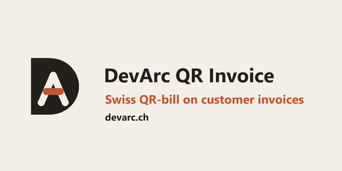
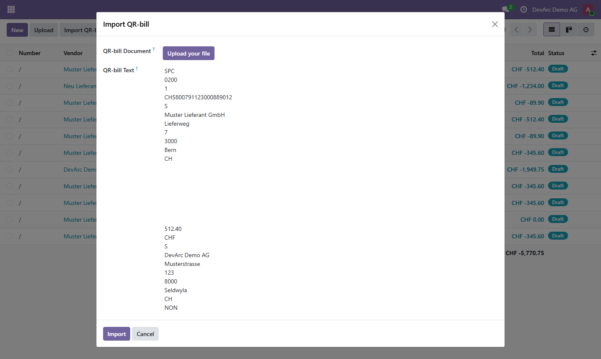
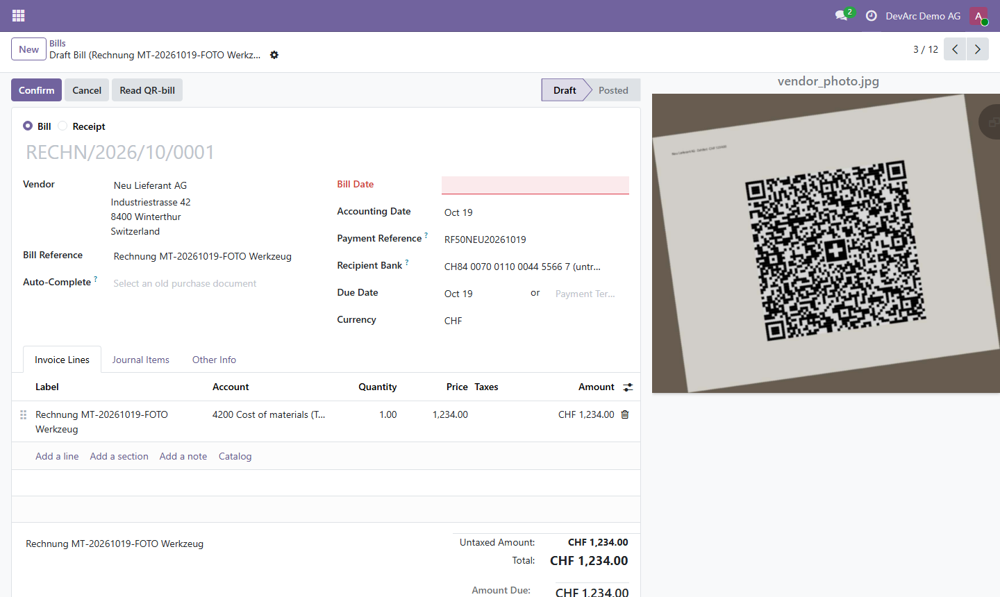
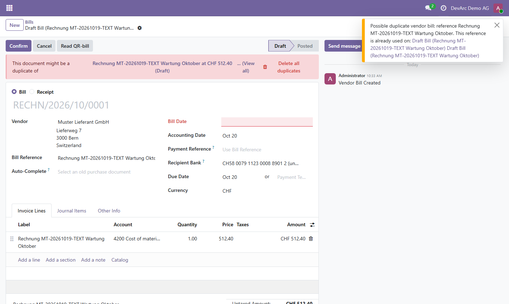

<section class="oe_container">
    <div class="oe_row oe_spaced">
        <h2 class="oe_slogan">DevArc QR Invoice</h2>
        <h3 class="oe_slogan">Import vendor Swiss QR-bills from scanner text, PDF or photo</h3>
        <div class="oe_span12">
            
        </div>
        <h3 class="oe_mt32">Import of vendor QR-bills</h3>
        <ul>
            <li>Button Import QR-bill on the vendor bill list, menu Accounting > Vendors > Import QR-bill, or the button Read QR-bill on a draft vendor bill.</li>
            <li>Input is the text of a QR code scanner, or a PDF or photo of the QR-bill. Only the QR code is decoded, there is no OCR.</li>
            <li>The vendor is found by IBAN, otherwise by name and ZIP, otherwise created. The bank account, currency, payment reference and one invoice line with the amount are filled and the document is attached. The bill stays in draft.</li>
            <li>Odoo fills its default expense account on the line and the tax stays empty, so you choose the account and VAT before posting.</li>
            <li>A QR-bill payable to your own company is rejected.</li>
        </ul>
        <div class="oe_span12">
            
        </div>
        <div class="oe_span12">
            
        </div>
        <h3 class="oe_mt32">Duplicate warning</h3>
        <p>Odoo 19 already shows its own duplicate banner on the bill. In addition, the import shows a warning with links when another vendor bill of the same vendor has the same reference. The new bill is created anyway.</p>
        <div class="oe_span12">
            
        </div>
        <h3 class="oe_mt32">QR-bill on customer invoices</h3>
        <p>The QR-bill itself is generated by the standard Swiss localization l10n_ch. This module changes the following:</p>
        <ul>
            <li>With a QR-reference or Creditor Reference, the Unstructured Message of the QR code carries the invoice reference or number instead of a duplicate of the payment reference.</li>
            <li>Two extra checks: CH or LI IBAN and amount between 0.01 and 999,999,999.99. A failing invoice is printed without the QR-bill page.</li>
            <li>Warning on the customer invoice form that explains why the QR-bill cannot be generated.</li>
        </ul>
        <h3 class="oe_mt32">Requirements</h3>
        <p>Odoo 19 Community with l10n_ch. Python packages: <code>pip install zxing-cpp pypdfium2</code>. License LGPL-3.</p>
        <p>Made by <a href="https://devarc.ch">DevArc GmbH</a>, Switzerland. Support: info@devarc.ch</p>
    </div>
</section>
